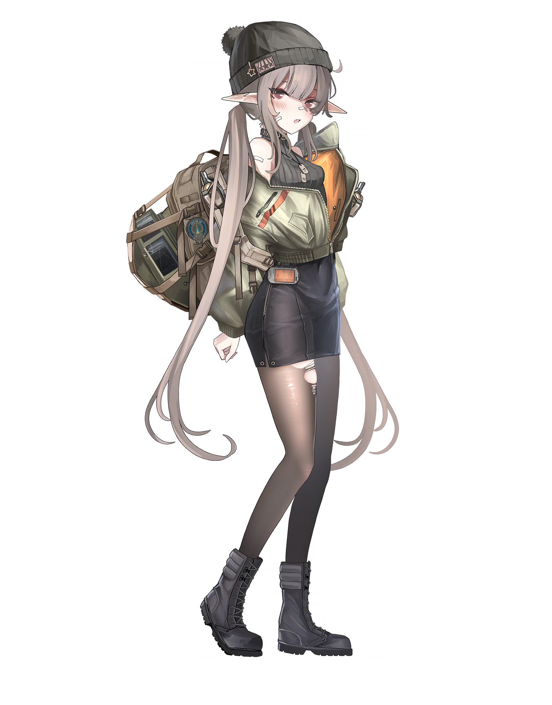

[ MAIN MENU ]
=================================================================================================
[ CHARACTER INFO ]
Lida
[ BASIC INFORMATION ]
CODENAME
Successor
RACE
Earthling-Circassian Mixed Race
OCCUPATION
None
EGO STRENGTH
Developing
NATIONALITY
Primorsky republic
CLASS
NPC
AFFILIATION
Joint Development Region
[ PERSONAL HISTORY ]
As part of the exchange and integration between the two worlds, the Earthlings who participated in the development of Nox left a large number of mixed descendants on the planet Nox. Lida’s father, Alexey, was a Union construction worker working in the Union Territory and her mother was a Circassian woman who fled to the Union Territory to escape the war. This kind of union was very common among unions in the early days and most of them formed stable families. However, Alexei was a promiscuous and a drunkard and even he himself could not tell when the child's mother never returned home. The infant Leda was almost sent to an orphanage. At this time, Alexei's sister took the initiative to raise Lida and beat her own brother. Lida's aunt already had a biological son who was in primary school at this time. He was very wary of the arrival of his cousin and suspected that he would never be able to monopolize all the care of his parents.
Lida had little memory of her birthplace. When her cousin was in high school, her aunt began to rotate back to Earth as the first batch of United Nations builders. Her aunt was once worried that the young Lida would not be able to adapt to interstellar navigation and considered waiting until she was older before embarking on the journey. However, the social consensus at that time did not advocate worrying about the harm of cosmic radiation to young children. After all, humans are a race destined to build an interstellar civilization and many people will spend their entire lives in the universe in the future! In addition, her cousin finally obtained the admission qualification to the Experimental High School Affiliated to Provitalinsk University. If you miss this opportunity... I don’t know whether it’s luck or whether human genes are really strong, but space travel doesn’t seem to have any visible adverse effects on Lida. Under the care of her aunt, she thrived like all Union children, experiencing insignificant little joys and troubles.
There was once a director who wanted to find an actor with extraterrestrial origin for his children's TV series and came to the school where Lida was studying. However, Lida took sick leave that day and the director took a fancy to another equally cute little girl. Lida's film career never happened again... Has her fate changed? Maybe, maybe not, because in the face of the cruelest fate, no one can be spared. With the outbreak of the civil war, Lida, like all adults accustomed to a peaceful life, was forced to learn to adapt to the new war-torn world. Fortunately, as a child, Lida learned quickly, sometimes even faster than her cousin who became a soldier.
[ NOTES ]
- Lida is carying an 6BNT Vityaz-S (altyn variant) in her backpack